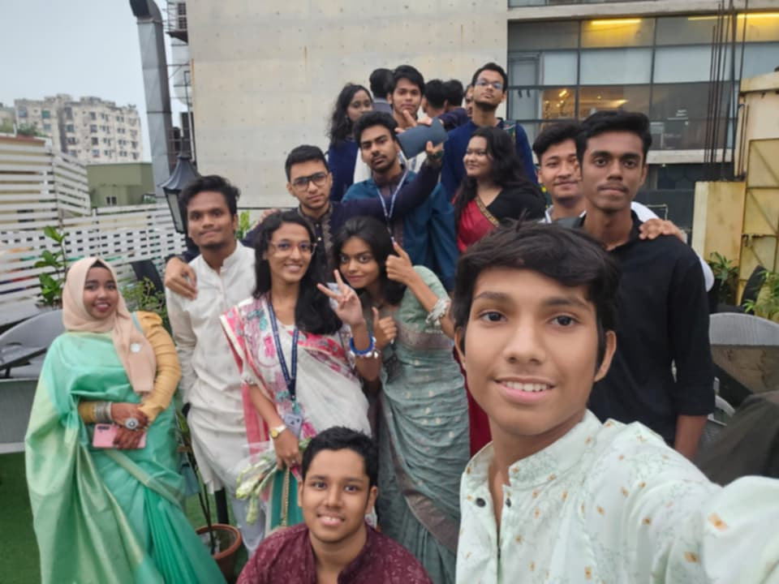
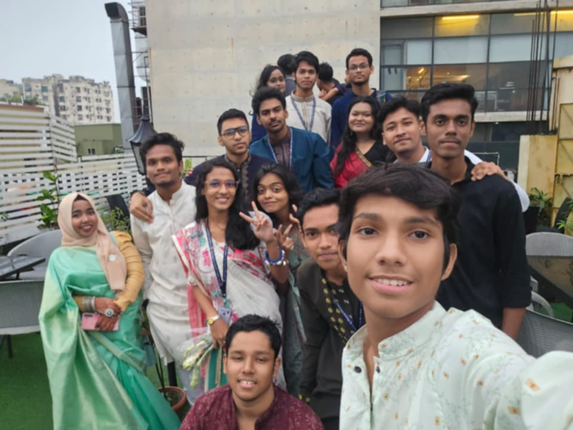
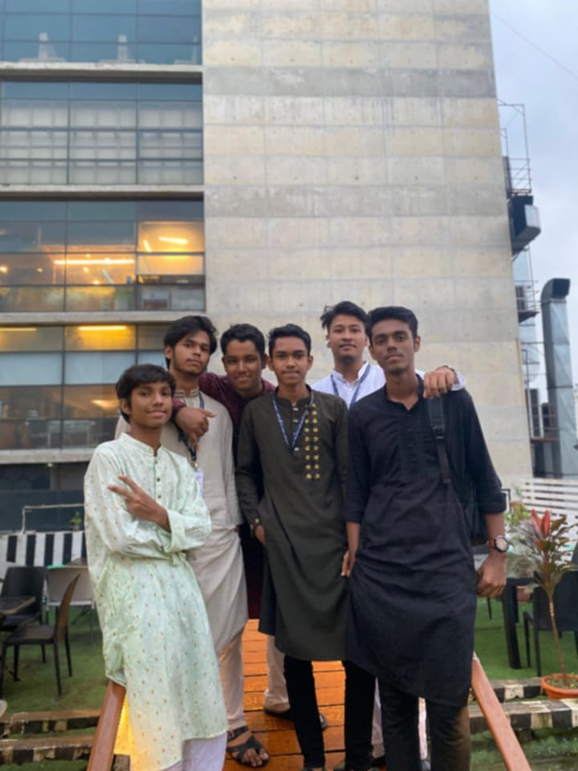
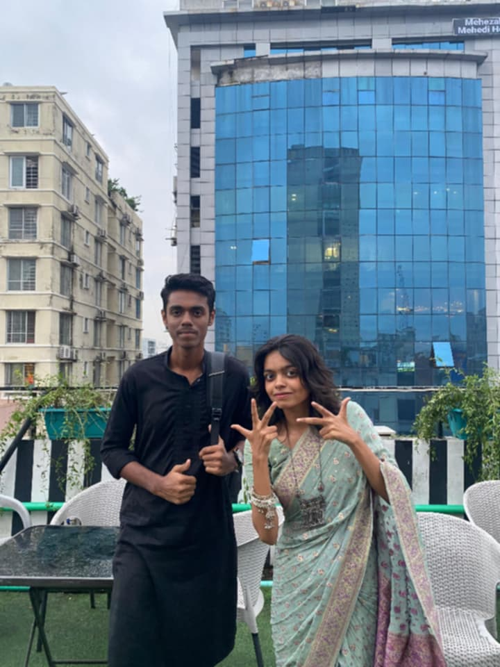

Sacred Timeline
VARIANT L-141
CLASS: HUMAN

VERIFIED
Subject Name
HASIB IBNE SHAMIM
Variant ID
141
Status
Burdened with Purpose
Nexus Event / Current Location
Reboti Mohon Pilot School And College
*HSC examination venue relocated from ULAB timeline.
AUDIO LOG
"I am burdened with glorious purpose."
The Beginning
কলেজ জীবনের শুরু তোদের সাথে। তোরা আমার কলেজ লাইফের সবচেয়ে সুন্দর অংশ। একসাথে হাসি, চাপ আর স্মৃতি—সবই এখানেই।

The Panic
ULAB কলেজ লাইফ মানে ক্লাস, আড্ডা আর deadline panic। মাঝে মাঝে মনে হয় এই এক্সামেই মারা… তাও কোনোভাবে বেঁচে যেতাম।
The Bond
ULAB এ আমি আমার লাইফের বেস্ট কিছু ফ্রেন্ড পেয়েছি। এখানে না আসলে হয়তো ফ্রেন্ডশিপ যে এত গভীর হতে পারে তা হয়তো কখনো বুঝতেই পারতাম না।

Visual Archive

timeline_branch_01.jpg

timeline_branch_02.jpg